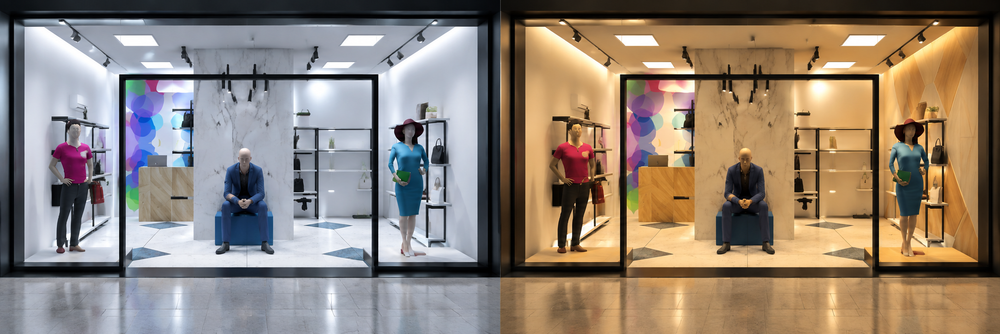

Retail Lighting Design
This project was developed in AGi32 for a retail space to compare the concepts of spaciousness and closure by following John Flynn’s psychological principles. The aim was to create two different lighting scenes that support customer experience while also addressing illuminance, uniformity, color rendering, sustainability, biological needs of the sales personnel, visual task at the counter, code and standard considerations, and glare control.
The spaciousness scene was designed with high-intensity, shadow-free lighting and peripheral wall lighting to create an open and energetic environment. The closure scene used lower intensity, non-uniform lighting with no peripheral lighting to create a more intimate atmosphere. Track lights were used to highlight merchandise, 2'×2' panel luminaires provided general illumination, and cove lighting was used to enhance the perception of spaciousness.
- Software: AGi32, AutoCAD
- Focus: spaciousness and closure in retail environments
- Integrated ambient, accent, display, cove, and counter lighting
- Evaluated illuminance, uniformity, color rendering, energy use, and glare